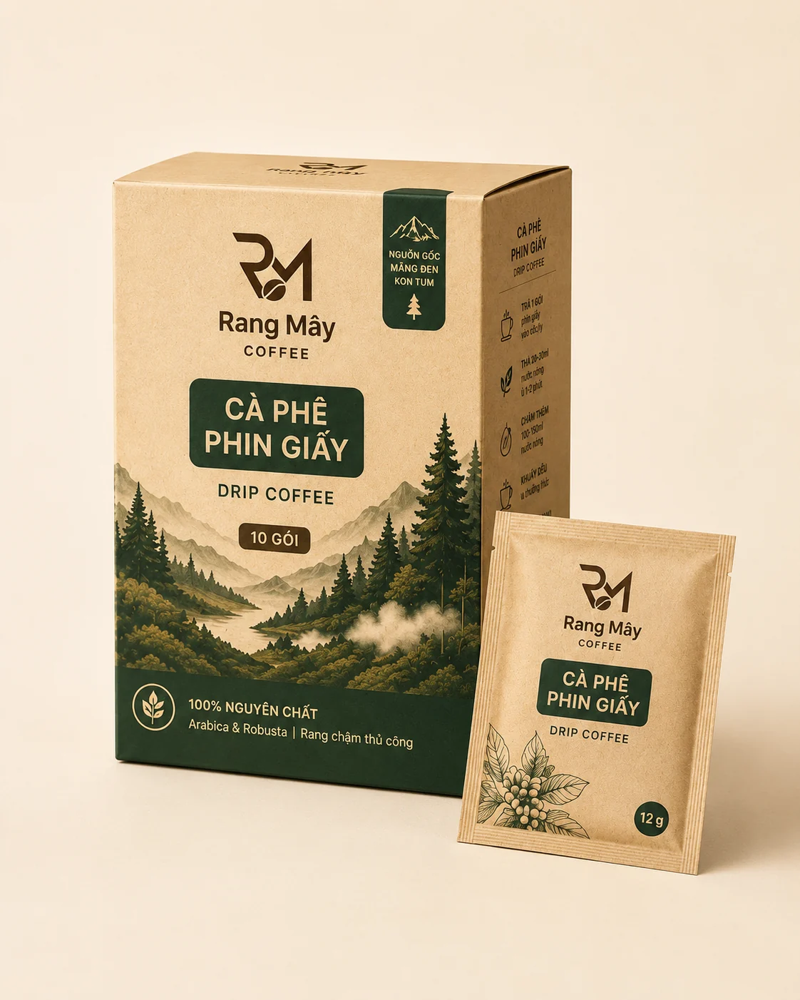

1. Cà phê phin giấy là gì? Vì sao dân văn phòng & người sành cà phê chuyển sang dùng phin giấy?
Cà phê phin giấy (Drip Bag Coffee hay Pour-over túi lọc) là phương pháp đóng gói cà phê rang xay nguyên chất định lượng chuẩn (12g/túi) bên trong phin lọc bằng giấy không tẩy trắng có hai quai gài thông minh ôm sát miệng ly.
Khác hoàn toàn với cà phê hòa tan chứa đường và hương liệu tổng hợp, cà phê phin giấy giữ nguyên 100% cấu trúc hạt cà phê rang mộc cùng ba ưu điểm vượt trội:
- Tiện lợi tối đa trong 3 phút: Không cần phin nhôm, không cần ấm cổ ngỗng chuyên dụng và không mất công dọn rửa bã cà phê sau khi uống.
- Chiết xuất sạch, êm dạ dày: Lớp màng giấy chuyên dụng giữ lại dầu thừa (cafestol) và cặn mịn, tạo nên tách cà phê trong trẻo, thơm thanh và ít gây cồn cào hơn cách pha truyền thống.
- Giữ trọn độ tươi mới từng ly: Mỗi túi phin giấy Rang Mây được đóng gói kín riêng biệt, ngăn oxy hóa và giữ nguyên hương thơm mới rang suốt 12 tháng — dễ dàng mang đi làm, công tác hay dã ngoại săn mây.
2. Điều gì làm nên chất riêng của Cà phê phin giấy Măng Đen thương hiệu Rang Mây?
2.1. Vùng nguyên liệu Măng Đen – Kon Tum ở độ cao 1.200m
Nằm trên dải đất đỏ bazan màu mỡ quanh năm mây mù bao phủ, cao nguyên Măng Đen (Kon Tum) sở hữu biên độ nhiệt ngày – đêm lớn cùng khí hậu se lạnh đặc trưng. Nhờ quá trình chín chậm tự nhiên dưới sương núi, hạt Arabica Măng Đen tích tụ lượng đường tự nhiên dồi dào, mang hương thơm thanh tao của hoa trắng, mật ong rừng và hậu vị ngọt sâu không chua gắt.
2.2. Nghệ thuật rang chậm thủ công, sống xanh & cam kết “3 KHÔNG”
Tại xưởng rang của Rang Mây Coffee, từng mẻ hạt chín đỏ được kiểm soát biểu đồ nhiệt tỉ mỉ để đánh thức phản ứng Maillard và Caramel hóa tự nhiên, kết hợp bao bì giấy Kraft thân thiện môi trường. Thương hiệu kiên định với tiêu chuẩn minh bạch 3 KHÔNG:
- Không tẩm ướp hương liệu hóa học hay bơ phụ gia công nghiệp.
- Không độn bắp, đậu nành làm khét đắng hay nặng đầu.
- Không chất bảo quản — công khai thông tin lô rang và truy xuất nguồn gốc rõ ràng.
3. Khám phá Bộ sưu tập 4 dòng Cà phê phin giấy Rang Mây chuẩn từng gu thưởng thức
Mỗi người yêu cà phê đều có một khẩu vị riêng biệt. Vì vậy, Rang Mây ra mắt 4 dòng sản phẩm chuyên biệt đáp ứng trọn vẹn từ gu truyền thống đậm đà đến gu Specialty thanh tao:

Phối trộn cân bằng Arabica & Fine Robusta. Nổi bật nốt chocolate đen, caramel ngọt hậu, không chua gắt — lựa chọn Best Seller cho mỗi buổi sáng.

Tỷ lệ Fine Robusta cao hơn, rang vừa–đậm cho cốt sánh dày, dậy mùi bơ cacao và hạt dẻ rang khi quyện cùng sữa đặc và đá viên.

100% Arabica Măng Đen độ cao 1.200m. Hương hoa trắng, mơ chín và mật ong thanh tao; cực hợp pha Pour-over nóng hoặc ủ lạnh Cold Brew.
Hộp cứng sang trọng gồm 24 gói đủ 3 vị (8×3) kèm thiệp chúc mừng AI miễn phí — đủ điều kiện áp mã VIP50K giảm ngay 50.000đ chỉ còn 219.000đ!
| Dòng sản phẩm | Thành phần hạt | Nốt hương chủ đạo | Gu thưởng thức | Giá niêm yết |
|---|---|---|---|---|
| Bản Giao Hưởng | Arabica & Fine Robusta | Chocolate đen, Caramel | Đen nóng / Đá mỗi sáng | 119.000đ |
| Đại Ngàn (Gu Đậm) | Fine Robusta chủ đạo | Cacao, Hạt dẻ rang | Cà phê Sữa đá & Bạc xỉu | 109.000đ |
| Sương Sớm | 100% Arabica 1.200m | Hoa trắng, Trái cây chín | Pour-over & Cold Brew | 145.000đ |
| Hộp Quà Tinh Hoa | Trọn bộ 3 vị (24 gói) | Đủ 3 tầng hương vị | Quà biếu & Thử vị gia đình | 269.000đ |
4. Hướng dẫn 3 cách pha Cà phê phin giấy Rang Mây ngon như Barista tại nhà
Cách 1: Pha Đen nóng chuẩn Pour-over (4 bước vàng)
- Mở & gài phin: Xé miệng túi lọc theo đường cắt sẵn, kéo hai quai giấy gài chắc chắn lên thành ly cao.
- Ủ nở cà phê (Bloom): Rót nhẹ khoảng 25–30ml nước nóng 90–95°C thấm đều bột cà phê, chờ 25–30 giây để bột nở đều và bung hương thơm.
- Chiết xuất: Rót chậm rãi thêm 120–140ml nước nóng theo vòng tròn xoắn ốc từ tâm ra ngoài.
- Thưởng thức: Đợi nước rút hết sau 2–3 phút, nhấc bỏ túi lọc và thưởng thức khi cà phê còn ấm nóng.
Cách 2: Pha Cà phê Sữa đá đậm sánh (khuyên dùng dòng Rang Mây Đại Ngàn)
Cho sẵn 20–25ml sữa đặc dưới đáy ly. Gài phin giấy, ủ 25ml nước nóng 92–95°C trong 25 giây rồi rót chậm thêm 65–70ml nước nóng để thu phần cốt cô đặc. Khuấy tan cốt nóng cùng sữa đặc cho dậy mùi bơ cacao rồi thêm đá viên già đầy ly.
Cách 3: Ủ lạnh Cold Brew thanh ngọt (khuyên dùng dòng Sương Sớm 100% Arabica)
Đặt 1–2 túi phin giấy vào bình kín cùng 180–220ml nước lọc mát, ủ trong ngăn mát tủ lạnh 8–12 tiếng qua đêm. Nhấc túi lọc ra, thêm đá viên và một lát cam vàng để mở ra tầng vị trái cây chín cực kỳ sảng khoái!
5. Câu hỏi thường gặp về Cà phê phin giấy Rang Mây (FAQ)
Cà phê phin giấy Rang Mây có bị chua gắt hay gây mất ngủ không?
Dòng Bản Giao Hưởng và Đại Ngàn được rang chậm ở mức Vừa–Đậm nên hoàn toàn không chua gắt, êm dịu và ngọt hậu. Nhờ 100% hạt nguyên chất không tẩm phụ gia hóa học, lượng caffeine tự nhiên (~1,2–1,5%) giúp tỉnh táo tập trung mà không gây mệt tim. Nếu nhạy cảm giấc ngủ, bạn nên chọn dòng Sương Sớm 100% Arabica và uống trước 15h chiều.
Một hộp cà phê phin giấy Rang Mây bảo quản được bao lâu?
Mỗi gói phin giấy 12g được hàn kín độc lập giúp giữ trọn hương thơm suốt 12 tháng kể từ ngày sản xuất (ngon nhất trong 6 tháng đầu). Bạn chỉ cần bảo quản hộp nơi khô thoáng, tránh ánh nắng trực tiếp.
Có mã giảm giá và miễn phí vận chuyển khi đặt trên website không?
Tất cả đơn hàng tại website chính thức đều được Miễn phí giao hàng toàn quốc (nhận hàng sau 1–4 ngày, kiểm tra rồi thanh toán COD). Bạn còn có thể áp dụng ngay các mã ưu đãi như RANGMAY10 (-10%), MANGDEN20K (-20.000đ) hoặc VIP50K (-50.000đ cho đơn từ 238.000đ).